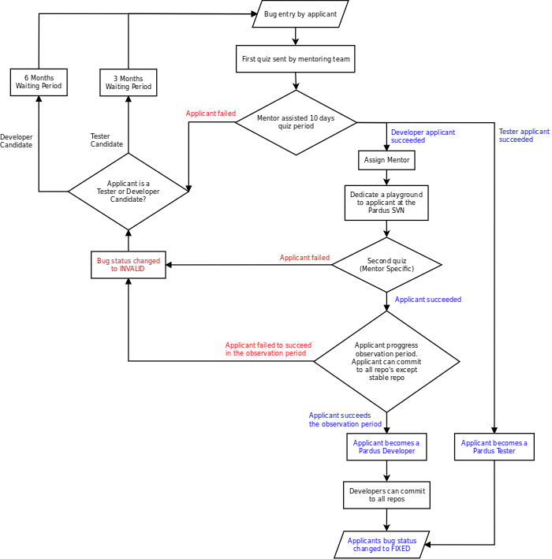

How to be a Contributor?¶
Last Modified Date: October 26, 2011
| Author: | Semen Cirit |
|---|---|
| Version: | 0.3 |
Applicant Tracking on Bugzilla¶
Developers and testers can follow this process in order to be a contributor.
For translators applications can be held from Pardus translation website. (See Quick Guide to Pardus Translations)
For bug triagers please see Bug reporting and triaging
For content writers please see Documentation
For designers please see Graphical design and multimedia

Some Hints :)¶
- If you want to hasten the developer applicant process, you can directly choose bug and work on it. After then request for beeing contributor developer with your ready junior job and wait only for review.
- If you are/were an intern at Pardus, you can directly request for beeing contributor developer with your internship project and wait only for review.
Tracking Process¶
Application Request¶
The applicant creates a bugzilla account if he/she has not yet.
The applicant reports a bug for the related component of “Yeni Katkıcı / New Contributor” product.
The summary of the bug likes “Testçi veya Geliştirici Adaylık Ad Soyad” “Tester or Developer Applicant Name Surname”.
The bug details part should contains the answers of the following personal questions.
What are the distributions that you use properly?
From when and at what level do you use Pardus?
What does it mean for you to contribute to a free software project
Have you ever contributed any free software project before? If yes, which project, in what way, how long?
Why would you want to contribute Pardus?
How much time could you spend for Pardus?
Please attach your short background as an attachment or give links.
- If the application is for development, the applicant should also attach these informations that you have already done:
- The prepared packages for Pardus repositories, or a improvement for Pardus projects.
- The bugs that you have fixed at bugs.pardus.org.tr.
- The other contributions that you have done for other distributions.
If the application has missing parts or the applicant report his/her bug carelessly, it will be closed with status RESOLVED/INVALID by mentoring coordinators and the Rejection Stock Response is given.
If the applicant gets a rejection at that stage, in the case of his/her effort to Pardus, he/she can reapply in 3 months to be tester, 6 months to be developer.
Sending Quiz to Applicant¶
The mentoring coordinators send quiz as an attachment with Quiz Sending Stock Response and give the QUIZSEND keyword to the report.
The applicant sends an approval, that he/she starts the quiz.
After 10 days of the approval, the applicant commits his/her answers as an attachment to the bug.
If the applicant is not responsive in these 10 days, his/her bug will be closed with status RESOLVED/INVALID by mentoring coordinators and the Rejection Stock Response is given.
- If the applicant is responsive and has send the answers in 10 days:
- Mentoring coordinators give ANSWERREC keyword to the report.
- The answers will be reviewed by mentors and review comments will be given on bugzilla.
If the quiz review is negative, his/her bug will be closed with status RESOLVED/INVALID by mentoring coordinators and the Rejection Stock Response is given.
If the applicant gets a rejection at that stage, in the case of his/her effort to Pardus, he/she can reapply in 3 months to be tester, 6 months to be developer.
- If the quiz review is positive:
- If the applicant applied as a tester, the test team membership will be accepted and tester list permissions will be given. The acceptence anouncement will be done by mentor coordinators as a Tester Acceptence Stock Response comment to the bug and the bug status will be changed to RESOLVED/FIXED.
- If the applicant applied as a developer, the mentor that controls the quiz give QUIZAPPROVED keyword to the report and sends Quiz Approved Stock Response to the quiz is approved..
Assigning Mentor¶
- The applicant choose a job from Junior Jobs and give this junior job id on his/her new contributor report as a bug comment.
- The mentor will assign according to this job. MENTORASSIGNED keyword is added to the report.
- When a mentor is assigned to an applicant, the mentoring coordinators send Assigning Mentor Stock Response as a comment to the bug.
- At this stage playground svn permissions will be given to applicant. (The mentor will send and an email to sys. Admin for giving permissions.)
- Send ping mails regularly to mentor@pardus.org.tr in order to assign mentor to an applicant.
- But there are some constraints about assigning:
- One mentor has maximum 3 applicants
- If all mentors has 3 applicants, the newest applicant should have to wait in the queue. It will be announced by mentoring coordinators with a Waiting in the Queue Stock Response comment.
Mentoring Process¶
- Assigned mentor will keep an eye on applicant (see Contributor Candidate Mentoring)
The mentor assign the bug to the applicant and change the status to ASSIGNED.
The mentor also depend the Junior Jobs to the application request bug report.
- When the applicant is ready for junior job review:
Change the junior job bug status to RESOLVED/FIXED
- Send a message to technical mail list
Mail subject format will be:
<Applicant Name> - <simple junior job information> pb#<BugID> JUNIORJOB Review
Example:
Semen Cirit - mangonel is a simple application launcher for KDE4 pb#17311 JUNIORJOB Review
- Add technical mail list archive link to the junior job bug URL.
After the message of the applicant, mentor start to review his bug on technical mail list.
Related to junior jobs difficulty, some additional junior jobs can be demanded from the applicant. (Mentor can guide applicant to find a new job.)
The applicant process finishing time is related to his/her mentor.
The owner of the packages that applicant has done will be his/her mentor.
If applicant has finished his/her jobs in time the applicant enters applicant progress observation period.
Applicant Progress Observation¶
All svn permissions excluding “stable” will be given to applicant. (The mentor will send and an email to sys. Admin for giving permissions.)
- Mentor will keep an eye on applicant, until the applicant reach a good level.
- He/she joins the package review process of the packages that the applicant done.
- He/she controls that the applicant fullfills the responsibilities of the contributor like continuity, accuracy, determination, communication.
If the applicant can not pass this process, his/her bug will be closed with status RESOLVED/INVALID by the mentor and related comment will be given. (The mentor will send and an email to sys. Admin for removing permissions.)
- If the applicant can pass this process:
- When the mentor has been satisfied by applicant, mentor sends a comment as he/she leaves the applicant and changes the bug status as RESOLVED/FIXED
- The applicant is called as developer.
- All svn permissions will be given to new developer. (The mentor will send and an email to sys. Admin for giving permissions)
- All packages and works that the developer has done during his candidacy, are transfered to him/her
Guiding Rules¶
- Until a mentor has been assigned to applicant, the mentor coordinators will track the process. (Traking the applicant bugs, sending quiz, assign mentor etc.)
- After the mentor has assigned, the mentor is responsible for the applicant. (Tracking his/her applicants, sending necessary comments to bug and editing it etc.)
Stock Responses¶
Rejection Stock Response¶
Başvurunuz ilgili ekip tarafından incelenmiş, maalesef sorulara verdiğiniz yanıtlar yeterli bulunmamıştır. Ayrıca başvurunuz hangi alanda Pardus'a katkı verebileceğinizi ölçmemize yardımcı olabilecek örnek bir uygulama kodu, çözümüne katkıda bulunduğunuz bir hata, yama, vb. gibi geçmiş katkı referansları da içermemektedir. Unutmayın ki, Pardus'u kullanmak, sorunlarınızı hata takip sistemine bildirmek, listeleri takip edip listelerdeki yardım taleplerini yanıtlamak Pardus'a katkı vermenin en güzel yollarından biridir. Moralinizi bozmayın ve bilgi birikiminizin bizi ikna edecek düzeye geldiğini düşündüğünüzde tekrar başvurmaktan çekinmeyin. Bol şanslar.Your application has been reviewed and we are sorry to say that the answers you have given were found inadequate. Furthermore your application does not contain any code samples, patches, a reference to a bug that you have solved or any other contribution that help us determine your potential as a future developer. Please note that using Pardus, reporting bugs, following and habitually reading the mail lists and responding to any help demand is also a good way to contribute. Do not hesitate to reapply whenever you decide your contribution to Pardus and knowledge is adequate for persuading the Pardus Application Review Team.
Quiz Sending Stock Response¶
Merhaba (Aday), Pardus (Geliştirici / Testçi) Adayı Başvurunuz alınmıştır. Pardus'a göstermiş olduğunuz ilgi için teşekkür ederiz. Adayların Pardus ve (Geliştirme / Test) süreci hakkında araştırma yaparken öğrenmelerini hedefleyen sınavımızı ekte bulabilirsiniz. Soruları ve altına yanıtları yazarak AD_SOYAD isminde kaydettiğiniz dosyayı ek olarak gönderiniz. Bol şanslar. Kaynaklar, http://developer.pardus.org.tr http://tr.pardus-wiki.orgHi (Applicant), Thank you for your Pardus (Developer / Tester) Candidate application. We appreciate your interest in contributing to Pardus. Please take your time to answer the (Developer / Tester) Candidate Quiz given to you as an attachment. The aim of this quiz is to give candidates a general Pardus knowledge while they dig for answers. Send the file named NAME_SURNAME that includes the questions and answers as an attachment. Good luck. Resources: http://developer.pardus.org.tr http://en.pardus-wiki.org
Tester Acceptence Stock Response¶
Başvurunuz olumlu sonuçlanmıştır, testçi@pardus.org.tr için gerekli izinleriniz verilmiştir. Pardus'a yapacağınız katkılarda dolayı şimdiden size teşşekür ederiz.Your application is favorable, the permissions about testçi@pardus.org.tr has been given. Thank you in advance for their generous contributions to make for Pardus.
Waiting in the Queue Stock Response¶
Şu anda tüm mentor'larımızın slotları doludur, slot'ları uygun olan mentor'lar oluştuğunda size geri dönüş yapılacaktır. Bu süre içerisinde Pardus'a yaptığınız katkılara devam edebilir ve kendinizi bu yönde daha fazla geliştirebilir ve mentor sürecinizi kısaltabilirsiniz. İyi günler,ll slots of our mentors are occupied, when the slots are available we will back to your application. uring this period, you can continue to contribute to Pardus, and may shorten your mentoring process.
Quiz Approved Stock Response¶
(Quiz'i kontrol eden kişi, sorular ile ilgili yorumlarını yazar ve gerekli istek ve beklentilerini
bildirir ve daha sonra aşağıda bulunan bilgileri yoruma ekler)
Bu aşamadan sonra bugzilla'da bulunan junior job'lardan[1] admins@pardus.org.tr üzerine atanmış
olan istediğiniz raporlardan birini seçip bug id'sini
yoruma ekleyiniz.
[1] http://bugs.pardus.org.tr/buglist.cgi?keywords=JUNIORJOBS&query_format=advanced&keywords_type=allwords&bug_status=NEW&bug_status=ASSIGNED&bug_status=REOPENED
(The mentor that had controled the quiz responses, give his/her explanation and declare his/her desire and expectation.
Then add the below information to bug comment)
After this period you have choose a junior job [1] that assigned to admins@pardus.org.tr and send its bug id to this bug report as a comment.
Regards,
[1] http://bugs.pardus.org.tr/buglist.cgi?keywords=JUNIORJOBS&query_format=advanced&keywords_type=allwords&bug_status=NEW&bug_status=ASSIGNED&bug_status=REOPENED
Assigning Mentor Stock Response¶
Seçmiş olduğunuz iş doğrultusunda size x kişisi mentor olarak atanmıştır.
SVN hesabı açabilmemiz için, aşağıda bulunan bağlantı doğrultusunda elde ettiğiniz çıktıyı bize göndermeniz gerekmektedir [1].
Bu çıktıyı gönderdiğinizde http://svn.pardus.org.tr/uludag/trunk/playground/ ve http://svn.pardus.org.tr/pardus/playground/
dizinlerine yazma izinleri verilecektir.
Bu aşamadan sonra seçmiş olduğunuz işi gerçeklemeye başlayabilirsiniz. Gerekli gördüğünüz durumlarda mentor'unuz ile
iletişime geçmekten çekinmeyiniz.
Bu aşamada yapacağınız çalışmalar için şimdiden kolaylıklar dileriz.
[1] http://developer.pardus.org.tr/guides/newcontributor/creating-svn-account.html
Related to your responses, Gökçen Eraslan is assigned you as a mentor.
In order to creating an svn account, you have to add the output that is mentioned below link [1] as a comment to this bug.
When you send this output, the write permissions for http://svn.pardus.org.tr/uludag/trunk/playground/
and http://svn.pardus.org.tr/pardus/playground/ directories will be given.
After this period you can start to implement the chosen junior job. If you need , please do not hesitate to communicate with your mentor.
Regards,
[1] http://developer.pardus.org.tr/guides/newcontributor/creating-svn-account.html